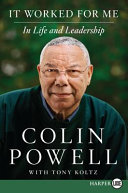

(Audible Unabridged, narrated by Colin Powell)
Model
A leader:
- sets the high standards and mutual respect, which will flow through the organization.
- solves problems
- takes responsibility for setting a plan and continues to adjust such plan based on new information
- Good leaders set vision, missions, and goals. Great leaders inspire
The right mindset:
- ensures a problem-solving attitude
- teaches and exemplifies moral courage to speak out when standards are not being met
- creates imaginative and creative folks with ideas and the ability to anticipate.
- ensures that learning and improvement are the sole focus, not the unit’s success or failure in the mission. It’s not a blame game
- ensures that evaluations should evolve into a system that asks, where do we need more training? How do we make our troops better and more skilled? What have we done right? What have we done wrong? The sole goal is to improve our performance
- always gets over failure quickly. Learns from it, study how you contributed to it. If you are responsible for it, own up to it, and move on.
- Understand that it isn’t where you start in life that counts; it is where you end up. So believe in yourself, work hard, study hard, be your own role model, believe that anything is possible, and always do your best. Remember that your past is not necessarily your future.
Colin Powell’s Lists
- 13 rules: General life advice and how to survive
- Intelligence gathering: Discerning fact from supposition
- Mental Checklist: Advice before making a decision
- Press interviews: Things to remember when speaking on the record
- How to survive as my staff aide - or what not to do: Rules to live by to work for Colin
13 rules:
- It ain’t as bad as you think. It will look better in the morning.
- Get mad, then get over it
- Avoid having your ego so close to your position that when your position falls, you ego goes with it.
- It can be done - It is more about your attitude than reality. Maybe it can’t be done, but always start out believing you can get it done until facts and analysis pile up against it.
- Be careful what you choose: you may get it
- Don’t let adverse facts stand in the way of a good decision. - Good judgment comes from experience, and experience comes from bad judgment.
- You can’t make someone else’s choices. You shouldn’t let someone else make yours
- Check small things
- Share credit
- Remain calm. Be kind
- Have a vision. Be Demanding
- Don’t take counsel of your fears or naysayers
- Perpetual optimism is a force multiplier
Intelligence gathering:
- Tell me What you know: Means you are reasonably sure that your facts are corroborated. You know where they came from, and you can confirm them with multiple sources.
- Tell me what you don’t know
- Then tell me what you think
- Always distinguish which from which
- Place carefully each in their proper box: facts, opinion, analysis, hunches, instinct
Mental checklist before making a decision:
- Does it make common sense? Take a deep breath, rub your eyes.
- Does it fit in with everything else that is going on? Is there a context for this event?
- How much time do I have to figure this out?
- How can I confirm it?
- What are the risks, costs, and opportunities lost if the report is true and we delay action?
- What are the risks, costs, and missed opportunities if it is false and we act too quickly?
- What are the stakes?
- Time’s up! Do something! Keep searching!
With respect to the press, remember:
- They get to pick the questions. You get to pick the answer
- You don’t have to answer any questions you don’t want to
- Never lie or dissemble, of course; but beware of being too candid or open
- Never answer hypothetical questions about the future
- Never reveal the private advice you have given your superiors
- Answers should be directed to the message you want readers/viewers to get. The interviewers are not your audience
- They’re doing their job you’re doing yours but you’re the only one at risk
- Don’t predict or speculate about future events
- Beware slang or one-liners unless you are consciously trying to produce a sound bite
- Don’t wash dirty linen
- Do not answer any question containing a premise you disagree with
- Don’t push yourself or be pushed into an answer you don’t want to give
- If trapped, be vague and mumble
- Never cough or shift your feet
- When there are second follow-up questions, you’re in trouble - break right, apply power, gain altitude, or eject.
How to survive as my aide-or what not to do:
- Don’t hesitate to ask me what to do if uncertain
- Don’t ever sign my name, or for me
- Never use money on my behalf
- Avoid “the general wants” syndrome-unless I really do
- Provide feedback, but be tactful to those who ask-talks between you and me are private and confidential
- Family has nothing to do with the office. Never interrupt with calls from family unless there’s a crisis.
- Never keep anybody waiting on the phone-call back
- I like meeting generally uninterrupted. I ask a lot of questions. I like questions and debate.
- I’m a people/phone junkie. I like to remain enormously accessible
- I will develop ways of getting to know what’s happening
- Don’t accept speaking engagements without my knowledge
- Keep accurate calendars and records. And keep faithful track of calls and whom I have seen. I’ll always return calls
- I tend to get moody or preoccupied. I will snap, but that clears the air
- Be punctual; don’t waste my time
- I prefer written information to oral: writing encourages discipline
- I do lots of paperwork-and I like doing it
- Make sure correspondence is excellent. No split infinitives
- Never, never permit illegal or stupid actions
- No surprises. I don’t like to be blindsided. Bad news doesn’t get any better with time. If there is a problem brewing, I want to know early-heads-up as soon as possible
- Speak precisely. I often fudge for a reason. Don’t over interpret what I say
- Don’t rush into decisions-Make them timely and correct